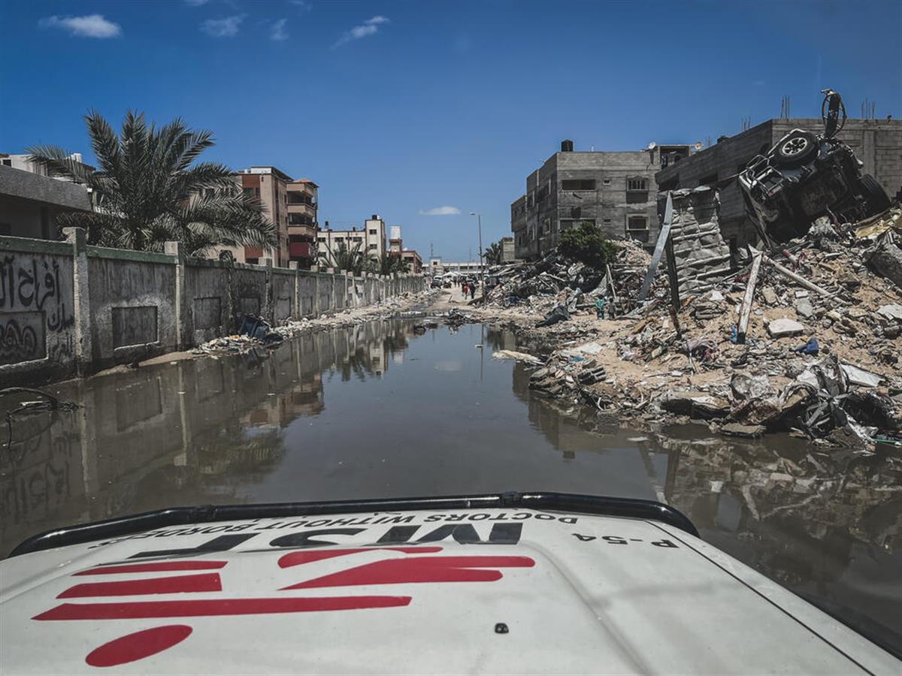

MSF secretary-general Chris Lockyear, at the organisation’s Geneva headquarters. (Geneva Solutions/Kasmira Jefford)
ON SOURCE: GENEVA SOLUTIONS
MSF’s Christopher Lockyear: ‘It’s shocking to think that Gaza could be forgotten
By Kasmira Jefford
A year since the 7 October Hamas attack that triggered the war in Gaza, as the focus turns to the escalating crisis in Lebanon, the dire needs of the besieged enclave risk being neglected, warns the head of MSF.
Médecins sans Frontières (MSF) has been providing medical care in Gaza and the West Bank for 35 years but, like other aid groups, it significantly scaled up its response since 7 October 2023 and the war that has engulfed the region, with nearly 800 staff on the ground.
What followed the attacks by Hamas on Israel, which killed nearly 1,200 people, and the ensuing assault on Gaza represented “a paradigm shift” in the way MSF and other humanitarians have been able to operate, according to the Geneva-based medical aid group. Half of the enclave’s buildings have turned to rubble, including most of its hospitals, and nearly the entire population has been displaced, often several times.
More than 41,600 people have been killed and 96,000 injured, according to Palestinian authorities. Humanitarian access into Gaza has also been blocked, crippling aid operations, while over 300 aid workers have been killed.
The very notion of humanitarian aid has also been damaged by the war, MSF secretary-general Christopher Lockyear says, used as a smokescreen by world leaders in the absence of a ceasefire and to avoid some of the tough moral questions around the world’s collective responsibility in the war. He tells Geneva Solutions the reasons behind this.
Geneva Solutions: How has this past year’s conflict transformed humanitarian aid response?
What we have been seeing in Gaza for the last 12 months is disproportionality being used as a doctrine. This is a methodology that has been put in place consistently in terms of Israel’s military tactics, and, as a consequence of this, there have been violations of international humanitarian law on an almost daily basis. People – our own staff, civilians – have been displaced so many times that we are losing count.
Alongside that, humanitarian assistance is being systematically instrumentalised. One very clear and practical example of this is the fact that field hospitals are increasingly becoming the way we provide medical services instead of operating in medical infrastructure, which has been destroyed. We are worried that by operating in field hospitals we facilitate this destruction.
More broadly, this brings us to the question of impunity and accountability. We've had six staff killed over the last year, and we are still seeking responses to our requests for investigations into their deaths. This will have consequences, not just in the immediate region and future, but also in the long term in terms of what it means to provide humanitarian assistance under basic rules of war.
What does this disregard for the rules of war mean for the future of aid?
I would say it's worse than a disregard for international humanitarian law – IHL has been used as a smokescreen to enable the continuation of this doctrine of disproportionality. What we're seeing is a real, acute hypocrisy, with states who have been calling for Israel to agree to a ceasefire continuing to enable them through, for example, the supply of weapons. The same applies on the other side as well, in terms of those states that have been enabling Hamas.
The image of aid has been manipulated to justify a status quo, which is unacceptable. Part of the rationale for some states continuing to provide arms to Israel has been, for example, that there needs to be proof of violations of IHL to prevent that transfer of weapons. Well, firstly, you don't have to look very hard to find violations of IHL, and secondly, from a moral perspective, the burden of proof shouldn't be on NGOs to provide a legal environment to prove that IHL violations are happening. The burden of proof should be on those enabling this to continue to show that their weapons are not being used to violate IHL.
You spoke earlier about the instrumentalisation of aid. How have the politics around humanitarianism changed?
Humanitarian assistance is becoming the main currency of international relations and geopolitics. Look at the number of Security Council resolutions that are essentially about providing humanitarian access rather than peace and security. That people want us to do a job is becoming one of the key cruxes of every negotiation. There is something of an abdication of responsibility when it comes to, for example, the Security Council working on issues of peace and security.
With Israel now turning its attention to Hezbollah in Lebanon, is there a risk of Gaza being forgotten?
That's a real fear. In a way, it's shocking to think that Gaza could be forgotten. We spent the last year being very frustrated with Sudan being forgotten and trying to work out how to bring more attention to the crisis there. So, I find it quite hard to get my head around the fact that we may need to actually now work out how we can bring Gaza back to the attention that it deserves. At the same time, the situation in Lebanon is incredibly worrying.
What have you been doing to respond to the worsening situation there?
We are reorienting our presence in the country to make it an emergency response. Up until recently, we’ve had more of an institutional presence. We've had some medical programmes there, but we’ll be scaling those up and putting emergency teams in place.
Over 300 aid workers have been killed since 7 October. How has this war changed perceptions about the safety of local humanitarian workers?
We have to be aware when we're talking about dangers faced by humanitarian workers that the vast majority of that risk falls on local humanitarian workers, and that's borne out very clearly by the statistics. The cause of the dangers can vary significantly from context to context – for both local and international workers. When compared to Sudan, for example, the dynamics are very different.
I think that the emblems (of humanitarian aid organisations) still carry weight but only as long as the work carries weight. So that's where we come down to the fact that we need to be able to be responders. We need to be able to have medical teams on the ground and to have contact with patients to be able to do all the rest of it – whether that's guaranteeing the safety of our staff or being able to advocate on the population's behalf.
Do aid organisations need to give more attention to the safety and training of local staff?
There are a number of things that we need to do to really focus on our local staff, including understanding the risks much better than we have done previously, but also protecting them when it comes to things like abuse of power within an organisation and abuse of power within the community. I think one of the key frontiers in terms of where humanitarian work goes next is really ensuring that we are doing our duty of care and all forms when it comes to local workers, whether that be through security risks, whether that be through the power systems, or the humanitarian system more broadly.
The personal toll this is having on aid workers is huge, with many losing their lives and their loved ones. How is your staff faring?
I read posts from our staff on social media almost on a daily basis and it's heartbreaking what they're going through. At the same time, one of their key messages to us is that they want to carry on working and that they want us to stay there. So far, that's what we've decided to do. It doesn't mean to say that at some point in the future, we don't decide that it's too dangerous and it becomes too much of a risk – that decision is always on the table.
How much of your work as a humanitarian organisation do you see as advocacy as much as response?
For MSF, the two have always been part of our DNA – the medical response, but also talking about what we see. We were founded by both doctors and journalists and that has stayed part of our culture. But without us doing impactful medical programmes, our voices wouldn’t be as strong. So that calculation is something that’s happening internally on a daily basis.
What do you see as the biggest priorities for humanitarians in Gaza right now?
There are two fundamental things. One, the war needs to stop. There needs to be a ceasefire, and the killing needs to end. Secondly, there needs to be an absolute flood of humanitarian assistance coming into Gaza and now Lebanon.
Israel-Gaza war Humanitarian aid
ON SOURCE: GENEVA SOLUTIONS
